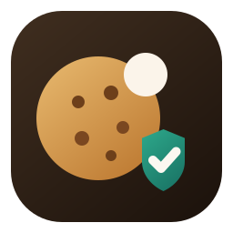

Quiet browsing by default
Cookieless
Hide cookie nags quietly, reject supported banners, and report broken sites only when you choose.
Recommended keeps banner handling calmer for everyday browsing.
Hide only removes banners visually and never clicks anything.
Stronger reject uses the most aggressive reject attempts when confidence is high.
Current site
Waiting for a supported tab...
No action
Cookieless will explain what happened here.
Lifetime stats